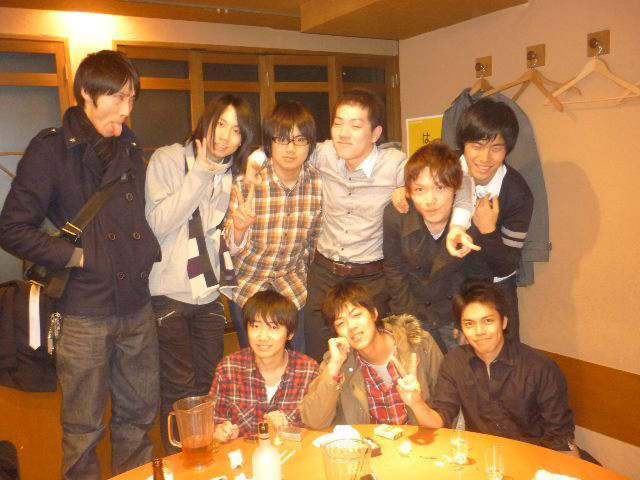

<!doctype html>
<html lang="en">

	<head>
		<meta charset="utf-8">

		<title>俺クレド</title>

		<meta name="description" content="A framework for easily creating beautiful presentations using HTML">
		<meta name="author" content="Hakim El Hattab">

		<meta name="apple-mobile-web-app-capable" content="yes" />
		<meta name="apple-mobile-web-app-status-bar-style" content="black-translucent" />

		<meta name="viewport" content="width=device-width, initial-scale=1.0, maximum-scale=1.0, user-scalable=no, minimal-ui">

		<link rel="stylesheet" href="css/reveal.css">
		<link rel="stylesheet" href="css/theme/moon.css" id="theme">

		<!-- Code syntax highlighting -->
		<link rel="stylesheet" href="lib/css/zenburn.css">

		<!-- Printing and PDF exports -->
		<script>
			var link = document.createElement( 'link' );
			link.rel = 'stylesheet';
			link.type = 'text/css';
			link.href = window.location.search.match( /print-pdf/gi ) ? 'css/print/pdf.css' : 'css/print/paper.css';
			document.getElementsByTagName( 'head' )[0].appendChild( link );
		</script>

		<!--[if lt IE 9]>
		<script src="lib/js/html5shiv.js"></script>
		<![endif]-->
	</head>

	<body>

		<div class="reveal">

			<!-- Any section element inside of this container is displayed as a slide -->
			<div class="slides">
				<section data-markdown data-separator="^\n---$" data-vertical="^\n>>>$">
					<script type="text/template">
					## 俺クレド
					〜2018年ver〜

					高倉 啓史

					---
					## 自己紹介
					- 高倉啓史(ゴエモン)
					- プロダクト部
					- 2013/04/01 入社(0期生)

					---
					## とりあえずDISC
					

					(ストレングス・ファインダーはよく覚えてない)

					---
					## 家族構成
					- 父(ビートルズおたく)
					- 母(韓流おたく)
					- 自分
					- 姉(V系おたく？)

					

					---
					## 割とおたくよりな家族
					ものは大事にしろと幼少期の頃によくいわれた

					---
					## 〜小学生
					
					
					
					
					
					

					---
					## ほとんどが家族の影響
					ゲームとか…音楽とか…

					ネットは小学生後半ぐらいから

					---
					## 中学生〜高校生

					---
					## インドアな日々
					- 男子校
					- オンラインゲーム全般(CGI〜MMO〜Xbox360)
					- ネットで色々遊ぶ(同期10人で提示版借りてた)
					- ゲーセン巡り
					- Mixiとか流行りものが嫌い(天邪鬼)
						- これは後々いろいろと響く事に…
					- おたく全盛期
					- 真面目に吹奏楽をやってた筈だがあんまり覚えてないぞ

					---
					## 大学生
					
					

					---
					## 部活とバイトの日々
					- 芝浦工業大学に入学
					- 軽音楽部に入部（といってもBigbandJazz）
						- 部室に入り浸る
					- 音源探しにCD屋めぐり
						- 金を出せば手に入るというのは幸せな事だと気づく
					- 割と体育会系よりな部活
						- 先輩とのコミュニケーションとかを学ぶ
					- 自宅から徒歩１分のスシローでずっとバイトしてた。

					---
					## 就職

					---
					## は、全然決まらなかった
					- 人と話すのが好きじゃない
					- 面接つらい
					- メンタル弱い

					---
					## 負のスパイラル
					

					就活二年目突入
					（でも全然就活しなかった）

					---
					## 無事内定(2013/03/28)
					- 内定もらって4日後に初出社（課題図書x2）
					- 人事の妹さんが同じ学部だった繋がり
					- 正直ベンチャーはよくわからないが面白そうだった
						- 大学柄なのかベンチャー情報があまり入ってこない
						- 周りにベンチャーへ行った人が皆無
						- 技術力のあるベンチャーならなんとかなるだろ

					---
					## その後_2013年〜2015年ぐらい
					- レポートサーバー作った
					- BizreachWomanやった
					- クーポンシステム作った
					- 数えきれないぐらいの機能作った
					- 3代目マーケエンジニアになった
						- お金やKPIのことを意識し始めたのはこの辺
						- 広告費用をAPIでとったりしてた
						- 社内のトラッキングコード自動発行ツール作った

					---
					## その後_2016年〜2017年ぐらい
					
					- 運用チームのリーダーになった
						- 名前がつまんないから変えたいって騒いだ
							- （恵さんのせいで）GOEチームになった
					- チームでスロークエリーとかバグとかレポート化して改善した

					---
					## その後_2017年〜
					- 新規事業の立ち上げにアサインされた
						- エンジニア3人、デザイナー1人（同期）、PM1人
						- 現時点で最後のエンジニア活動
					- 立ち上げたら移動になった
					- スクラムマスターになった <- いまここ！

					---
					## 俺クレド

					---
					### 面白い事は面白く。
					### 面白くない事も面白く。

					---
					

					---
					## 使用したやつ
					- reveal.js
					- remotes.io
					- github pages

					---
					## ありがとうございました

					</script>
				</section>
			</div>
		</div>

		<script src="lib/js/head.min.js"></script>
		<script src="js/reveal.js"></script>

		<script>

			// Full list of configuration options available at:
			// https://github.com/hakimel/reveal.js#configuration
			Reveal.initialize({
				controls: true,
				progress: true,
				history: true,
				center: true,

				transition: 'slide', // none/fade/slide/convex/concave/zoom

				// Optional reveal.js plugins
				dependencies: [
					{ src: 'lib/js/classList.js', condition: function() { return !document.body.classList; } },
					{ src: 'plugin/markdown/marked.js', condition: function() { return !!document.querySelector( '[data-markdown]' ); } },
					{ src: 'plugin/markdown/markdown.js', condition: function() { return !!document.querySelector( '[data-markdown]' ); } },
					{ src: 'plugin/highlight/highlight.js', async: true, condition: function() { return !!document.querySelector( 'pre code' ); }, callback: function() { hljs.initHighlightingOnLoad(); } },
					{ src: 'plugin/remotes/remotes.js', async: true, condition: function() { return !!document.body.classList; } },
					{ src: 'plugin/zoom-js/zoom.js', async: true },
					{ src: 'plugin/notes/notes.js', async: true }
				]
			});

		</script>

	</body>
</html>
